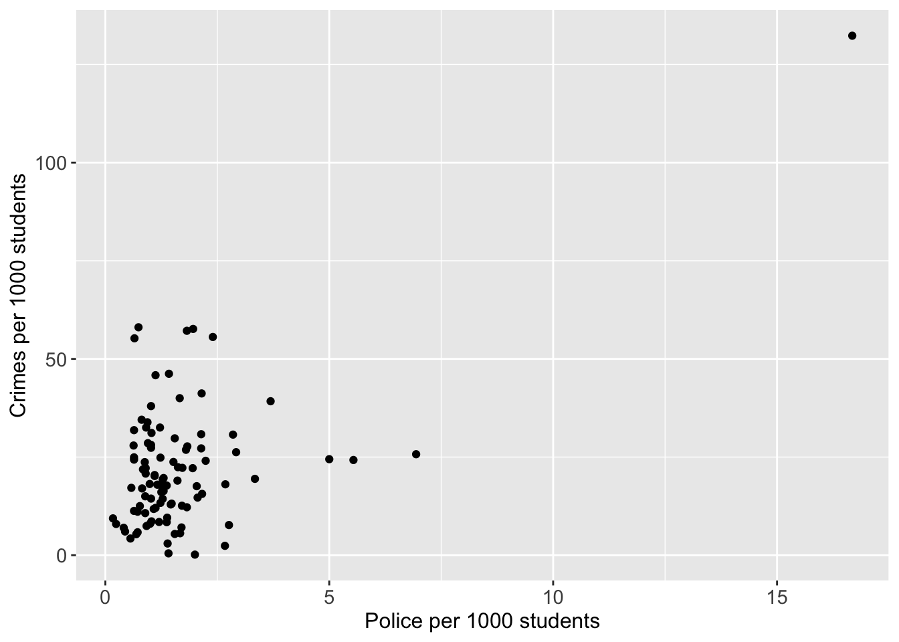
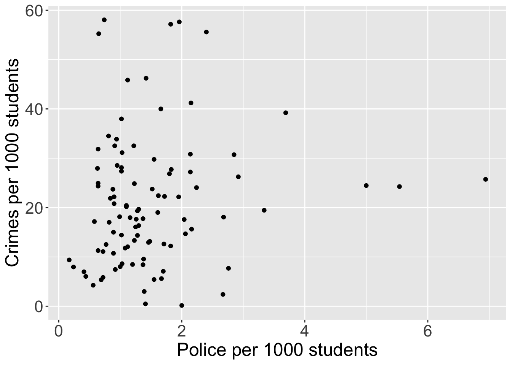
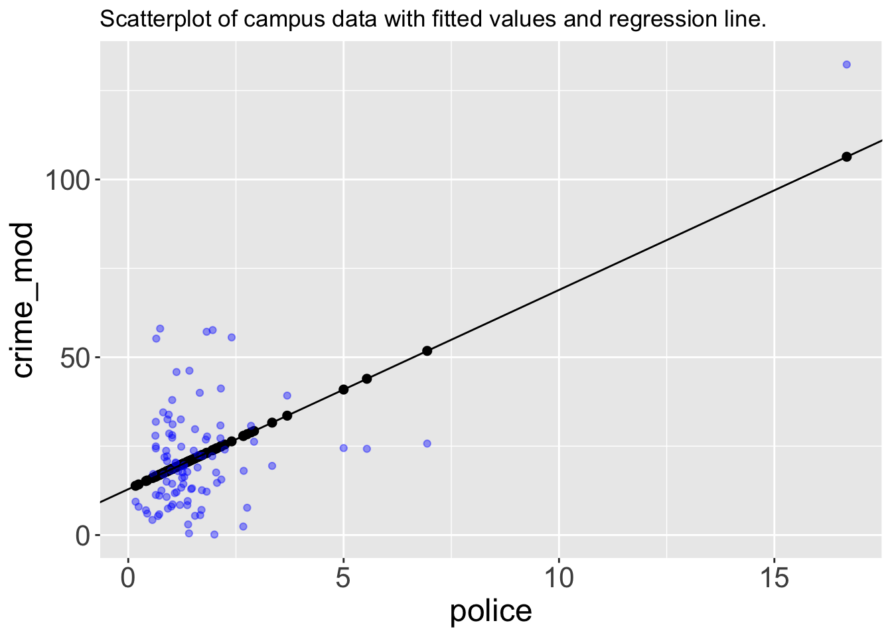
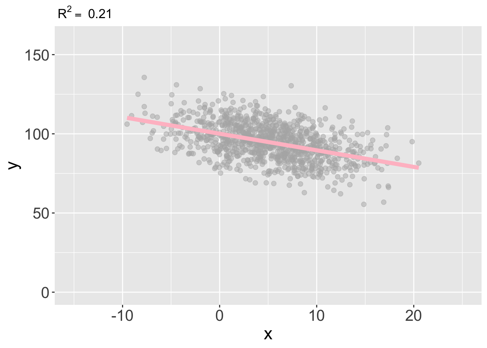
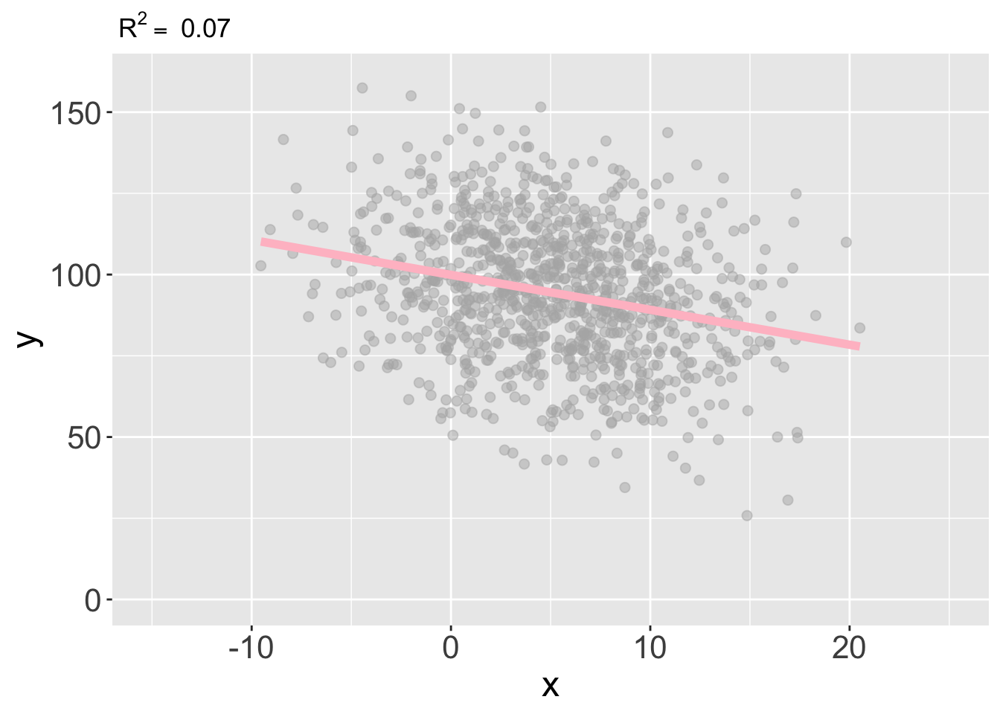
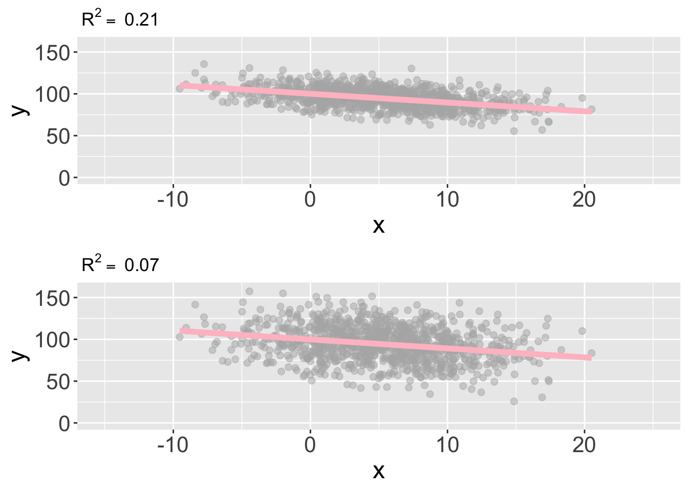

library(tidyverse)
library(wooldridge)
library(flextable)
options(
paged.print = FALSE
)Simple Linear Regression
Campus
campus <- wooldridge::campuscampus <- campus %>%
mutate(
crime = round((crime/enroll)*1000, 2),
police = round((police/enroll)*1000, 2))# Scatter plot
campus %>%
ggplot(
mapping = aes(
x = police,
y = crime
)
) +
geom_point() +
xlab("Police per 1000 students") +
ylab("Crimes per 1000 students") +
theme(
axis.text = element_text(size = 11),
axis.title = element_text(size = 12)
)
cor(campus)[1,2] %>%
as.double() %>%
round(.,2)[1] -0.3campus |>
select(crime, police) |>
cor() |>
round(
digits = 2
) |>
_[1, 2][1] 0.6Alternativt
campus |>
select(crime, police) |>
cor() |>
round(
digits = 2
) %>%
.[1, 2][1] 0.6campus |>
filter(police < 10) |>
ggplot(
mapping = aes(
x = police,
y = crime
)
) +
geom_point() +
xlab("Police per 1000 students") +
ylab("Crimes per 1000 students") +
theme(
axis.text = element_text(size = 16),
axis.title=element_text(size = 18)
)
lm_police <- campus |>
lm(
formula = 'crime ~ police',
data = _
)fitted_data <- tibble(
police = campus$police,
crime_mod = fitted(lm_police)
)
fitted_data |>
ggplot() +
geom_point(
mapping = aes(x = police, y = crime_mod),
size = 2
) +
geom_point(
data = campus,
mapping = aes(x = police, y = crime),
colour = 'blue',
alpha = 0.4
) +
geom_abline(
intercept = coefficients(lm_police)[1],
slope = coefficients(lm_police)[2]
) +
labs(title = "Scatterplot of campus data with fitted values and regression line.") +
theme(
axis.text = element_text(size = 16),
axis.title = element_text(size = 18)
)
\(R^2\)
set.seed(2222)
df1 <- tibble(
x = rnorm(1000, 5, 5),
y = 100 - 1*x +
rnorm(1000, 0, 10)
) set.seed(2222)
df2 <- tibble(
x = rnorm(1000, 5, 5),
y = 100 - 1*x +
rnorm(1000, 0, 20)
) g021 <- df1 |>
ggplot() +
xlim(-15,25) +
ylim(0, 160) +
geom_point(
aes(x, y), color = 'gray70', alpha = 0.5,
size = 2
) +
stat_smooth(
formula = 'y ~ x', data = df1, aes(x, y),
method = "lm", se = FALSE, color = 'pink',
linewidth = 2
) +
labs(title =
as.expression(bquote(~ R^2 == ~
.(round(summary(lm(y~x, df1))$r.squared, 2))))
) +
theme(
axis.text = element_text(size = 16),
axis.title = element_text(size = 18)
)g021
g007 <- df2 |>
ggplot(mapping = aes(x = x, y = y)) +
xlim(-15,25) +
ylim(0, 160) +
geom_point(color = 'gray70', alpha = 0.5,
size = 2) +
stat_smooth(formula = 'y ~ x', method = "lm",
se = FALSE, color = 'pink', linewidth = 2) +
labs(title = as.expression(
bquote(~ R^2 == ~
.(round(summary(lm(y~x, df2))$r.squared, 2)))
)
) +
theme(
axis.text = element_text(size = 16),
axis.title = element_text(size = 18)
)g007
ggpubr::ggarrange(g021, g007, nrow = 2)
lm_cars <- lm(
formula = 'dist ~ speed',
data = cars)summary(lm_cars)
Call:
lm(formula = "dist ~ speed", data = cars)
Residuals:
Min 1Q Median 3Q Max
-29.069 -9.525 -2.272 9.215 43.201
Coefficients:
Estimate Std. Error t value Pr(>|t|)
(Intercept) -17.5791 6.7584 -2.601 0.0123 *
speed 3.9324 0.4155 9.464 1.49e-12 ***
---
Signif. codes: 0 '***' 0.001 '**' 0.01 '*' 0.05 '.' 0.1 ' ' 1
Residual standard error: 15.38 on 48 degrees of freedom
Multiple R-squared: 0.6511, Adjusted R-squared: 0.6438
F-statistic: 89.57 on 1 and 48 DF, p-value: 1.49e-12fitted(lm_cars) 1 2 3 4 5 6 7 8
-1.849460 -1.849460 9.947766 9.947766 13.880175 17.812584 21.744993 21.744993
9 10 11 12 13 14 15 16
21.744993 25.677401 25.677401 29.609810 29.609810 29.609810 29.609810 33.542219
17 18 19 20 21 22 23 24
33.542219 33.542219 33.542219 37.474628 37.474628 37.474628 37.474628 41.407036
25 26 27 28 29 30 31 32
41.407036 41.407036 45.339445 45.339445 49.271854 49.271854 49.271854 53.204263
33 34 35 36 37 38 39 40
53.204263 53.204263 53.204263 57.136672 57.136672 57.136672 61.069080 61.069080
41 42 43 44 45 46 47 48
61.069080 61.069080 61.069080 68.933898 72.866307 76.798715 76.798715 76.798715
49 50
76.798715 80.731124 -17.5791 + 3.9324 * cars$speed [1] -1.8495 -1.8495 9.9477 9.9477 13.8801 17.8125 21.7449 21.7449 21.7449
[10] 25.6773 25.6773 29.6097 29.6097 29.6097 29.6097 33.5421 33.5421 33.5421
[19] 33.5421 37.4745 37.4745 37.4745 37.4745 41.4069 41.4069 41.4069 45.3393
[28] 45.3393 49.2717 49.2717 49.2717 53.2041 53.2041 53.2041 53.2041 57.1365
[37] 57.1365 57.1365 61.0689 61.0689 61.0689 61.0689 61.0689 68.9337 72.8661
[46] 76.7985 76.7985 76.7985 76.7985 80.7309(mean_dist <- mean(cars$dist))[1] 42.98# Y hat bar
mean(fitted(lm_cars))[1] 42.98